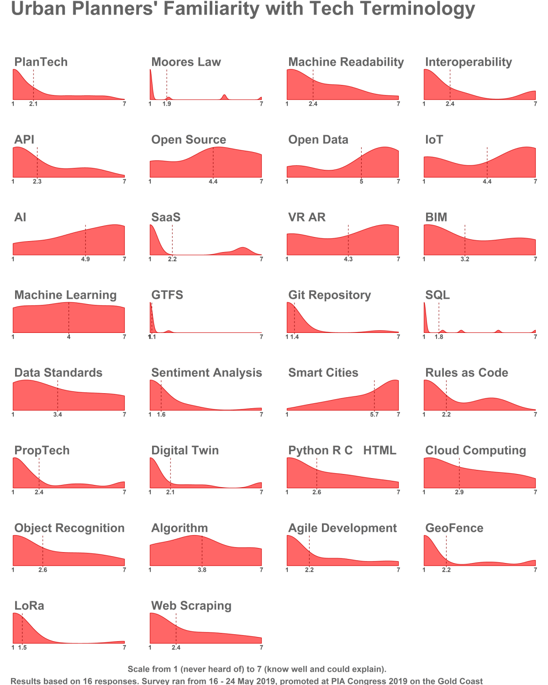

Urban Planners’ Familiarity with Tech Terminology
4 September 2019
For me, coming to grips with technology has meant learning a lot of new words over the past four years. Out of curiosity, I made a list, and at the Australian Planning Congress in May I ran a simple online quiz asking planners to rate their familiarity with each term on a scale from 1 (had not heard of) to 7 (know well and could explain). I have shared this image before, but not here and I have updated this one slightly having removed a couple of responses from people who identified as non-planners.

These results are from a pretty small sample, but are still an interesting reflection of what people might find familiar. In many ways I don’t see the results as particularly surprising - there is decent familiarity with broader terms like Smart Cities, AI and Algorithms but less so with terms that refer to more specific technologies or methodologies. It would be interesting to see how familiarity with "digital twin" changes as several high-profile projects kick off around the country.
Mostly though I see this as a reminder to check on how planners and IT professionals communicate, rather than something used to simply ascertain tech proficiency. In absolute terms a lot of this technology is not new, but it is new to the people outside the traditional IT community that it is increasingly being applied either by or to. There is a lot for both tech and non-tech people to learn about each other's domains as these technologies become more pervasive.
*Plotting the distribution of data is an important yet surprisingly neglected step to understanding it. For anyone interested I have now uploaded the R code I wrote to make the image above on GitHub (a website incorporating a version control system which makes it easy for people to share and collaborate on computer code) for free reuse. Give me a yell if you need a hand getting it to work.
**In the last few months since this survey I have been lucky to have come across the people at Code for Australia who do great work in this area (with a lot of patience, respect and compassion). If you’re feeling lost, I recommend you check them out.
***I posted my talk from congress here which covers some of these terms.
 @ClaireCities
@ClaireCities